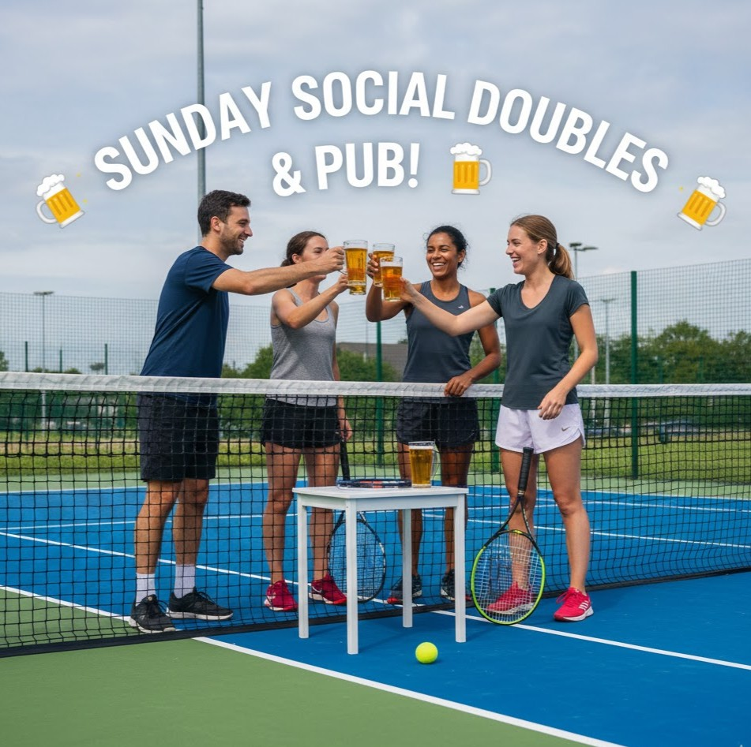

🎾 Social Doubles - Join the Fun!

Looking for a relaxed, friendly way to get some court time and meet new players? Join TennisNerds every Sunday for a few hours of fun, rotational social doubles and casual hitting!
This is a flexible, no-pressure session perfect for shaking off the rust, trying new shots, and enjoying the community aspect of tennis. All skill levels are welcome!
🤝 The Format: Mix, Match, & Rotate
We focus on keeping the ball rolling and getting everyone involved:
- Rotational Doubles: We'll mix up the partners every 15-20 minutes, ensuring you play with and against everyone. Great for developing adaptability!
- Casual Hitting Time: Time permitting, we'll dedicate courts for open hitting or specific drilling, allowing you to focus on a particular shot if you wish (Forehand, Serve, etc.).
- Social Focus: The main goal is to build our local tennis community. Expect friendly competition and a relaxed atmosphere.
🚨 Essential Requirements & Logistics
All attendees must be covered either by having an Annual Household Pass (£40) OR by paying the £6.00/hr Pay & Play court fee.
- Tennis Balls: We rotate the cost of a new tin of balls between participants each week.
- Equipment: Don't forget to bring your own racket!
📍 Venue & Directions
We play at the courts in Shephalbury Park, Stevenage.
Address: Broadhall Way, Stevenage, Herts, SG2 8NP
Parking: Free car parking is available, accessed from Broadhall Way (A602).
🍻 The 19th Hole (Optional Pub Visit)
After we've packed up the nets, we can head over to a local pub for drinks, food, and post-match banter. Perfect for building connections off the court!
📢 Stay Connected!
Follow us on Instagram for photos, videos, and news from the courts. Tag us in your snaps and stories to be featured:
Instagram: @tennisnerdsuk